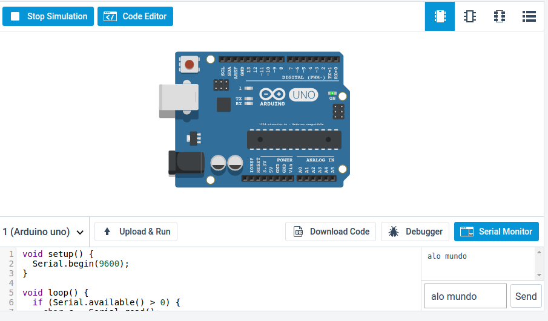

Serial
A interface serial oferece a comunicação bit-a-bit entre dois pontos.


O Arduino possui uma interface serial embutida, permitindo que ele se comunique
com o computador (pela USB) ou com outros dispositivos (pelos pinos 0 e
1).
A IDE do Arduino oferece o Serial Monitor (acessado através da lupa no topo à direita), por onde é possível ler e escrever para a interface serial. A IDE do Circuits.io também oferece funcionalidade equivalente.
Exemplo
O exemplo a seguir lê os dados da serial e os escreve de volta a serial.
O código inicializa a serial com velocidade de 9600 bps.
Em seguida, o loop do Arduino verifica continuamente se há dados a serem
lidos da serial.
Em caso afirmativo, o dado é lido e copiado de volta para a serial:
void setup() {
Serial.begin(9600);
}
void loop() {
if (Serial.available() > 0) {
char c = Serial.read();
Serial.print(c);
}
}